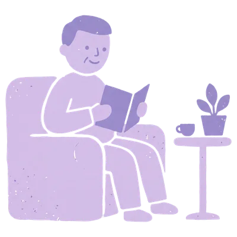
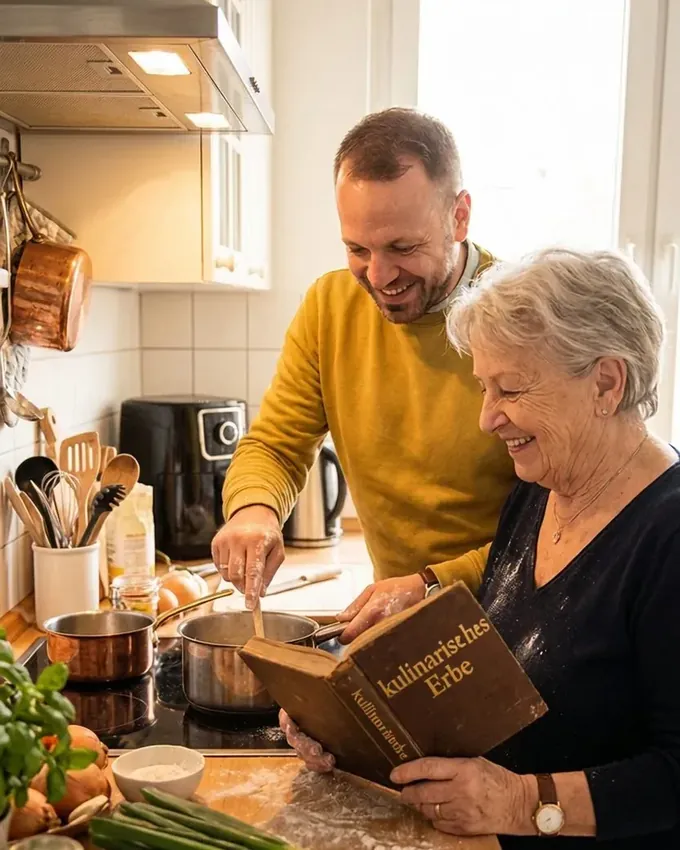
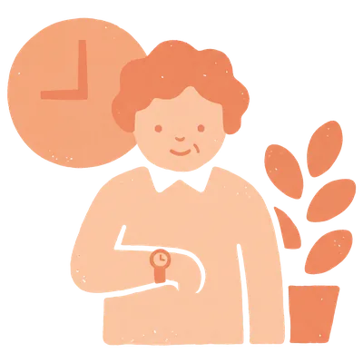
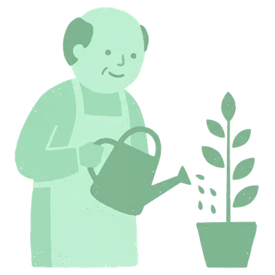
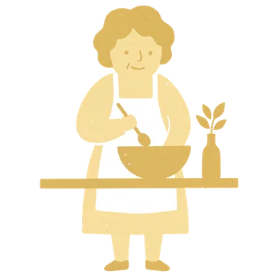

Zuhause & Wohlbefinden
Ein Ort zum Wohlfühlen. Wir unterstützen sanft bei Grundordnung, Wäsche und Pflanzen – mit dem geschulten Blick aus der Heilerziehungspflege dafür, was im Alltag wirklich entlastet.
Gemeinsam. Wertschätzend. Für ein selbstbestimmtes Leben zuhause.
Gelernter Koch • Heilerziehungspfleger • Präventionsberater
Jetzt Erstgespräch anfragen
Unsere vier Leistungsbereiche
Alle vier Leistungsbereiche zählen zu den anerkannten Angeboten zur Unterstützung im Alltag und sind – mit Pflegegrad – zu 100 % eine Leistung Ihrer Pflegekasse. Die Abrechnung über den Entlastungsbetrag (§ 45b SGB XI) übernehmen wir für Sie – schon ab Pflegegrad 1.

Ein Ort zum Wohlfühlen. Wir unterstützen sanft bei Grundordnung, Wäsche und Pflanzen – mit dem geschulten Blick aus der Heilerziehungspflege dafür, was im Alltag wirklich entlastet.

Zeit bewusst nutzen für das, was zählt. Wir übernehmen Wege, Begleitungen zu Ärzt:innen, Behörden oder Freizeitaktivitäten – verlässlich und mit Erfahrung aus Pflege und Prävention.

Gesund und gestärkt im Alltag. Wir schaffen fördernde Routinen durch sanfte Alltagsbewegung, Gedächtnistraining, Sturzprävention und echte Wegbegleitung gegen Einsamkeit.

Gemeinsam kochen weckt Erinnerungen und stärkt die Gesundheit. Wir kochen Ihre Lieblingsrezepte von früher, halten sie als gebundenes Familien-Kochbuch fest und sorgen mit Ernährungsfachkräften für herzgesunde Mahlzeiten im Alltag.
Häufige Fragen
Wir vereinbaren ein unverbindliches, kostenloses Gespräch bei Ihnen zu Hause. Dabei lernen wir uns kennen, klären Wünsche und Bedarf und schauen gemeinsam, welche Unterstützung passt – ganz ohne Verpflichtung.
Nein. Unsere Begleitung ist flexibel buchbar – von einzelnen Terminen bis zu regelmäßigen Einsätzen. Der Umfang lässt sich jederzeit anpassen, wenn sich Ihre Situation ändert.
Wir legen Wert auf feste Bezugspersonen, damit Vertrauen wachsen kann. Bei Urlaub oder Krankheit sorgen wir für eine gut eingewiesene Vertretung, damit die Begleitung nicht ausfällt.
Unser Schwerpunkt liegt im Dresdner Norden: Hellerau, Klotzsche, Wilschdorf, Weixdorf, Langebrück und Albertstadt. Sprechen Sie uns gerne an, auch wenn Sie etwas außerhalb wohnen.
Karriere
Wir suchen Menschen mit Herz und Geduld, die Alltagsbegleitung mit echter Wärme leben – ob im Haushalt, bei Ausflügen oder beim gemeinsamen Kochen. Flexible Zeiten, ein wertschätzendes Miteinander und Arbeit, die jeden Tag spürbar etwas bewegt.
Ob Quereinstieg, Wiedereinstieg oder mit Erfahrung in der Pflege – wir freuen uns auf Ihre Nachricht.
Jetzt initiativ bewerbenEin Ort zum Wohlfühlen. Unterstützung im Haushalt, die entlastet statt bevormundet – mit dem geschulten Blick aus der Heilerziehungspflege dafür, was im Alltag wirklich zählt.
Grundreinigung, Wäschepflege, Müllentsorgung und frisch bezogene Betten – regelmäßig und verlässlich, damit der Haushalt keine Last mehr ist.
Wir arbeiten nach Ihren Gewohnheiten und Wünschen, nicht nach Schema F. Sie behalten die Kontrolle über Ihr Zuhause.
Aus der Heilerziehungspflege bringen wir ein Auge dafür mit, wo im Alltag zusätzliche Unterstützung guttut – ganz ohne zu bevormunden.
Bezuschussbar über die Pflegekasse (§ 45b SGB XI) sowie Krankenkassen (z. B. BARMER nach § 20/43 SGB V).
Zeit bewusst nutzen – für das, was wirklich wichtig ist. Wir übernehmen Termine und Wege, auch die Begleitung zu Ärztinnen und Ärzten, mit Erfahrung aus Pflege und Präventionsberatung.
Zu Ärztinnen und Ärzten, Behörden oder Fachstellen – wir fahren mit, warten mit und helfen, das Besprochene einzuordnen.
Einkäufe, Post, Apotheke, der Weg zum Markt: Wir übernehmen Fahrdienst und Erledigungen – für Sie oder gemeinsam mit Ihnen.
Mit Hintergrund aus Pflege und Präventionsberatung erkennen wir früh, wo Termine zusammengehören oder etwas nachgehalten werden sollte.
Bezuschussbar über die Pflegekasse (§ 45b SGB XI) sowie Krankenkassen (z. B. BARMER nach § 20/43 SGB V).
Gesund und aktiv im Alltag. Aus der Präventionsberatung wissen wir, wie viel kleine Routinen bewirken – gemeinsame Bewegung, frische Luft und Gewohnheiten, die guttun.
Gemeinsame Spaziergänge und leichte Aktivierung im Alltag – im eigenen Tempo, regelmäßig statt gelegentlich.
Vorlesen, Schach und Gedächtnisspiele: Anregung, die Freude macht und die geistige Beweglichkeit fordert.
Gruppenausflüge, Veranstaltungen und Begegnungen – Teilhabe am Leben, auch wenn der Weg allein zu weit wäre.
Bezuschussbar über die Pflegekasse (§ 45b SGB XI) sowie Krankenkassen (z. B. BARMER nach § 20/43 SGB V).
Essen weckt Erinnerungen und stärkt die Gesundheit. Mit unserem biografischen Kochangebot verbinden wir Emotion, Gemeinschaft und Prävention direkt bei Ihnen zu Hause.
Wir kochen Ihre Lieblingsrezepte von früher, aktivieren bei Demenz sanft die Sinne und halten Ihre Familienrezepte als gebundenes Kochbuch fest.
Gemeinsam kochen gegen Einsamkeit – wir bringen Freude an den Esstisch und tauschen kulinarische Geschichten aus.
In Kooperation mit zertifizierten Ernährungsfachkräften bieten wir gezielte, alltagsnahe Ernährungsanpassungen bei Bluthochdruck, Diabetes, Gicht, Adipositas oder Mangelernährung – lecker und ohne Verzicht.
Bezuschussbar über die Pflegekasse (§ 45b SGB XI) sowie Krankenkassen (z. B. BARMER nach § 20/43 SGB V).